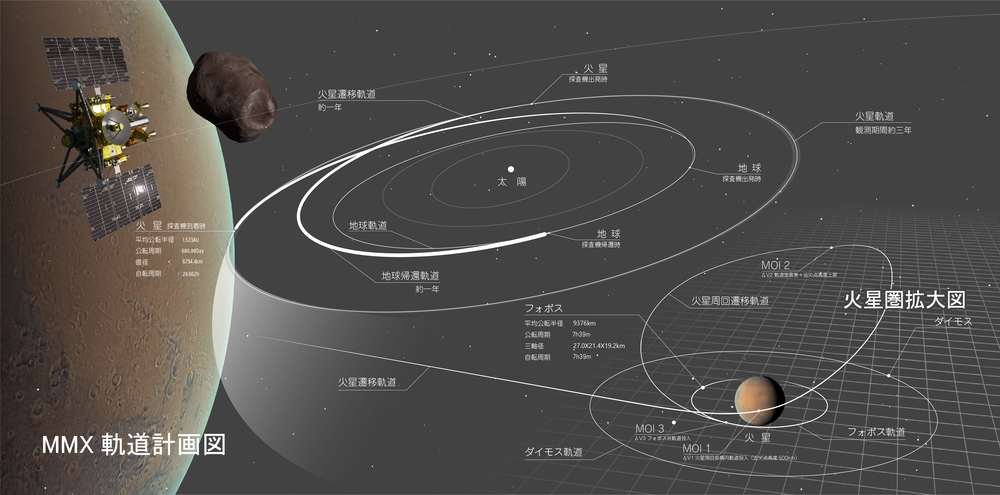
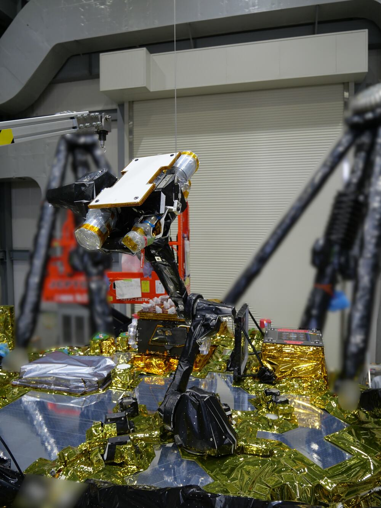

YUJI @ Japan
YUJI @ JapanIn the dark at Tanegashima Space Center, the countdown reached zero at 4:41:03 a.m. Japan Standard Time on Tuesday, October 20. H3 Flight 10 rose from the Large Launch Complex carrying a spacecraft named MMX—Martian Moons eXploration—and a promise that sounds almost deliberately disproportionate: travel for five years, cross hundreds of millions of kilometers, land twice near Mars, and bring home at least ten grams of dust.
JAXA's live broadcast showed the rocket clearing the pad into a black Kagoshima sky. In its October 20 result notice, the agency said the rocket flew as planned and MMX separated normally about 1 hour, 11 minutes and 13 seconds after liftoff. That confirms injection of the spacecraft; every later mission milestone remains ahead. Launch is the first movement, not the result. The question now is why ten grams justify a journey to Mars and back.
The moon that does not behave like a moon
Phobos is the larger of Mars’s two small moons, though “larger” is relative: it is an irregular body roughly 27 by 22 by 18 kilometers, tiny beside Earth’s Moon. It circles Mars so closely and quickly that it rises in the west and sets in the east from the Martian surface. Its dark exterior resembles some carbon-rich asteroids, which supports one origin story: Mars captured an object that formed elsewhere.
There is a competing story. A huge collision may once have struck Mars, throwing material into orbit that later assembled into Phobos and the smaller moon Deimos. The two explanations imply very different histories. A captured asteroid could preserve material delivered from the outer Solar System, including clues about how water and organic compounds moved toward rocky planets. A collision-born moon could preserve a physical record of early Mars and the violence that reshaped it.
That is the real payload: ten grams could identify a moon’s birthplace—and change the story of how habitable ingredients traveled through the Solar System.
Remote sensing has narrowed the possibilities but has not ended the argument. A laboratory on Earth can measure mineral grains, isotopes and chemistry at a precision that an orbiting instrument cannot match. The sample’s composition should show whether it is closer to primitive asteroid material or to rock associated with Mars. The returned grains may also contain a remarkable bonus: material blasted off Mars by impacts and later deposited on Phobos.
Why Japan is not landing on Mars itself
Mars is the obvious place to look for Martian history, but its gravity makes a round trip harder. A craft that lands on Mars must survive the atmosphere and then climb out of a much deeper gravitational well. Phobos offers access to the Martian sphere while allowing Japan to extend the small-body landing and sampling experience built through Hayabusa and Hayabusa2.
MMX is not simply Hayabusa2 with a more distant address. JAXA’s official mission profile describes a journey of about one year to Mars, entry into a quasi-satellite orbit that keeps the spacecraft moving with Phobos, detailed observations of candidate sites, two surface operations, and a departure in 2030. The return capsule is scheduled to reach Earth in 2031 and be recovered in Australia.

The spacecraft must work around communication delays that can reach about 44 minutes for a round trip, according to JAXA. Engineers cannot drive it like a remote-controlled car. Navigation, descent and sampling must tolerate uncertainty in a gravitational environment far weaker than Earth’s. Phobos’s gravity is so slight that a careless push can matter; landing is less about absorbing a heavy impact than about avoiding a bounce back into space.
A French-German scout lands first
Before the main spacecraft attempts its sampling operation, a small rover named IDEFIX is intended to reach the surface. France’s CNES and the German Aerospace Center, DLR, developed it with JAXA cooperation. The name comes from the small dog in the Asterix comics—a cultural joke attached to serious engineering.
IDEFIX will inspect the regolith, help characterize surface mechanics and reduce risk for the larger spacecraft. That sequence matters because no mission has operated directly on Phobos’s ground. The surface seen from orbit may hide slopes, boulders and dust behavior that challenge models. The rover turns the first landing into reconnaissance for the second.
MMX then plans to collect material during two soft-landing operations. Its instruments will also map shape, composition, gravity and internal structure, while the mission’s final Mars phase includes a more distant look at Deimos. Sampling is the headline, but the surrounding measurements are what connect a few grains to an entire moon.

The number becomes stranger when you compare it
Ten grams is the minimum, not a prediction of the final haul. Hayabusa2 returned about 5.4 grams from asteroid Ryugu in 2020, yet researchers have continued to divide microscopic portions among laboratories and extract discoveries about organic compounds, water-related minerals and the early Solar System. Sample-return science values provenance and cleanliness more than bulk.
A terrestrial rock picked up without context can be chemically rich but historically ambiguous. MMX’s material will come from a documented site whose surroundings are mapped before and after contact. Instruments on the spacecraft will provide regional context; laboratories will supply microscopic detail. The power comes from connecting the two scales.
The mission also carries a high-resolution camera system intended to capture the Mars system in 4K and 8K. Images will help with science and navigation, but they also give the public something samples cannot: a visual record of Phobos’s horizon, Mars nearby, and the mechanics of an expedition far beyond live human control.
Official JAXA mission movie (2025 version). The animation explains the planned mission and is not documentary footage of events already completed. Watch on JAXA’s official YouTube channel ↗
What has to happen next
H3 cleared the first visible test by leaving the pad. Japan’s newest large launch vehicle still carries the memory of Flight 1’s 2023 failure and the successful return to flight that followed. Flight 10 must place MMX on its planned interplanetary path; the spacecraft then begins a mission whose risks accumulate over years rather than minutes.
After arrival in the Mars region in 2027, the team must establish the quasi-satellite orbit, survey landing candidates, deploy IDEFIX, land the main spacecraft, acquire material, leave Mars in 2030, and deliver a capsule through Earth’s atmosphere in 2031. A successful launch completes only the opening movement.
That is why the precise countdown and the tiny sample belong in the same headline. The rocket demands precision measured in seconds. The laboratory reward may be measured in individual grains. Between them sits a five-year chain in which every operation must preserve the chance of bringing those grains home.
For readers watching from outside Japan, MMX is also a clear view of what Japan’s space program has chosen to specialize in. It is not trying to outscale every other program. It is taking the techniques of rendezvous, delicate landing, sampling and return—skills built mission by mission—and applying them to a destination close enough to Mars to answer questions about a planet.
At 4:41:03 a.m., the sky over Tanegashima brightened for a few minutes. The more important result will remain invisible for years. Ten grams will have to travel all the way home before scientists can ask the grains where a moon came from.